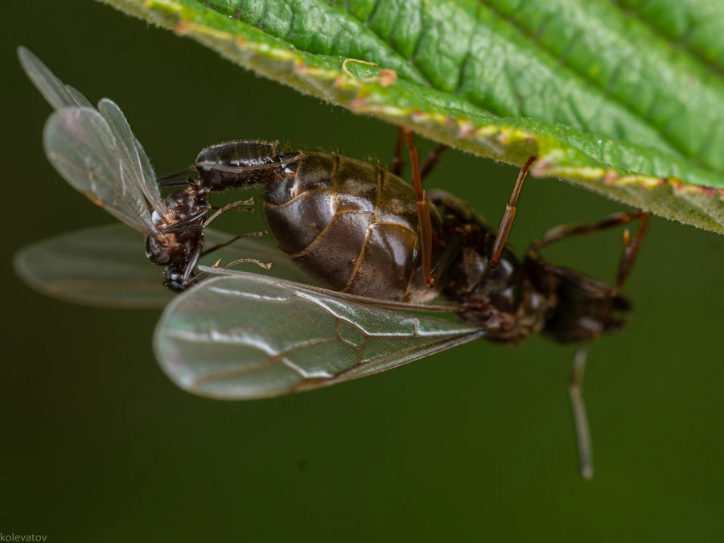

昆虫 · 动物界
黑毛蚁 Lasius niger

城市和花园中常见的黑色蚂蚁，体色黑褐，群体分工明确，会保护蚜虫并取食蜜露，是欧洲最常见的蚂蚁之一。
- 分类
- 门节肢动物门纲昆虫纲目膜翅目科蚁科属毛蚁属
- 栖息环境
- 花园、草地、路旁、建筑缝隙与腐木中
- 地理分布
- 欧洲、亚洲和北美洲，是常见城市蚂蚁
- 保护级别
- 暂无评估
物种志
黑毛蚁工蚁体长约 3–5 mm，体黑褐色至黑色，体表有细毛，腹部略膨大，触角呈膝状，胸部有细毛。蚁后体型较大，深褐色，腹部更饱满。群体规模通常有数千至数万只工蚁。
它生活在花园、草地、路旁、建筑物缝隙和腐烂木头中，杂食，取食昆虫、花蜜、腐果和蜜露，也会捕捉蚜虫并保护蚜虫群体，以获取其分泌的蜜露。黑毛蚁是社会性昆虫，群体分工明确，有觅食、保育、防卫等不同任务。它在欧洲、亚洲和北美分布很广，是欧洲城市和花园中数量最多的蚂蚁之一。黑毛蚁会进入室内寻找甜食，但一般不咬人，是常见的家庭访客，可用饵剂和清洁食物残渣来控制数量。
形态与习性
- 食性杂食，取食昆虫、花蜜、腐果和蚜虫分泌的蜜露
- 体长工蚁约 3–5 mm
- 识别体黑褐色，体表有细毛，触角呈膝状
- 社会结构群体有数千至数万只工蚁，分工明确
- 分布欧洲、亚洲和北美洲
趣味知识
- 黑毛蚁会保护蚜虫，像放牧一样获取蚜虫分泌的蜜露。
- 它是欧洲城市和花园中最常见的蚂蚁之一。
- 黑毛蚁偶尔会进厨房找甜食，但一般不会咬人。
生态关系
- 共生 → 棉蚜 蚂蚁取食蜜露并保护蚜虫